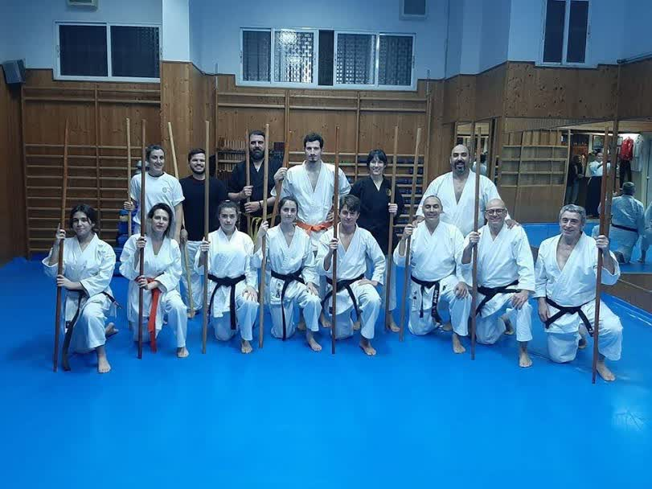
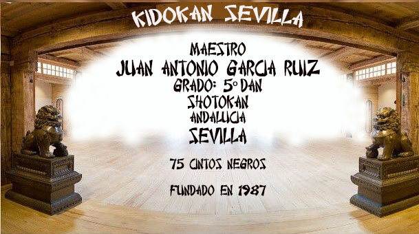
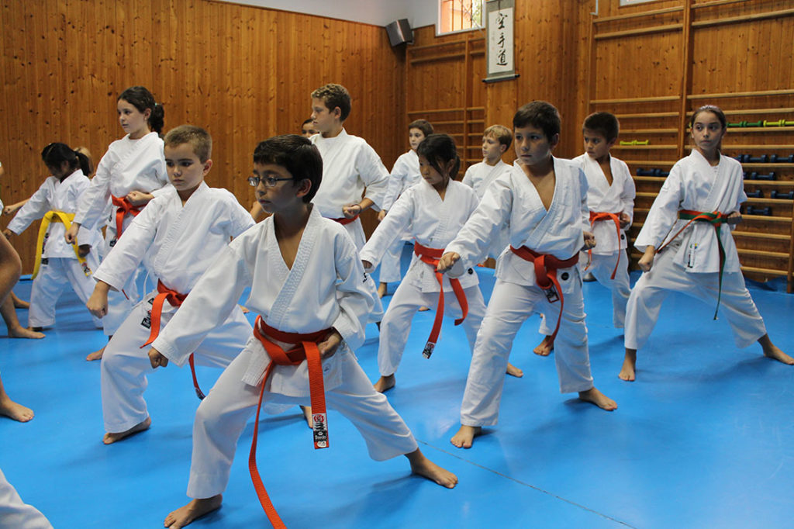
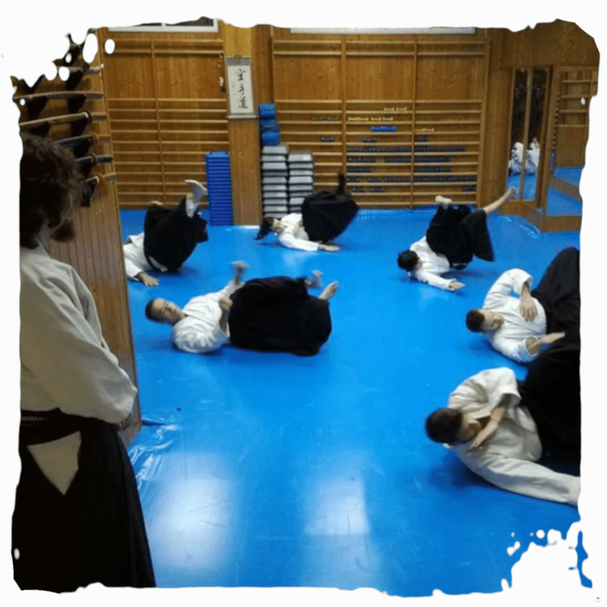
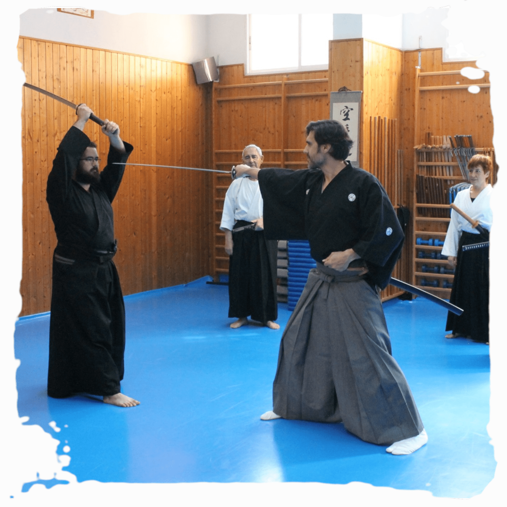
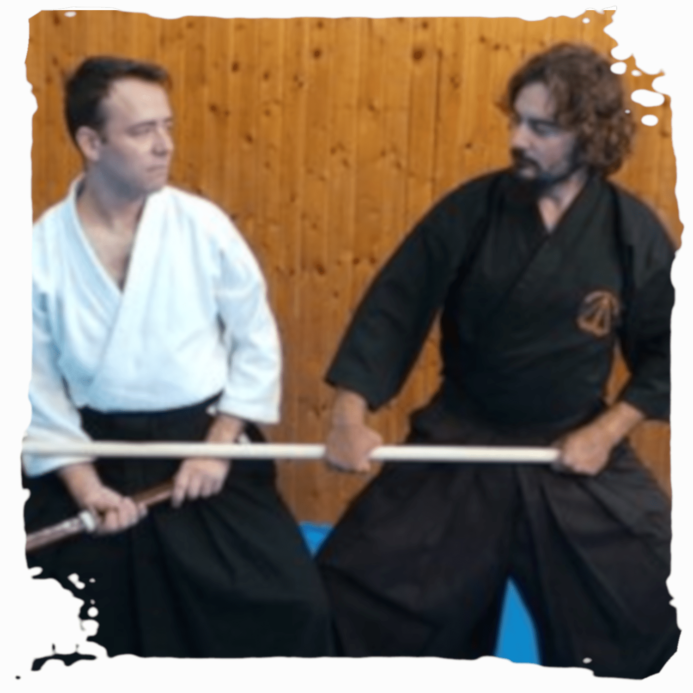
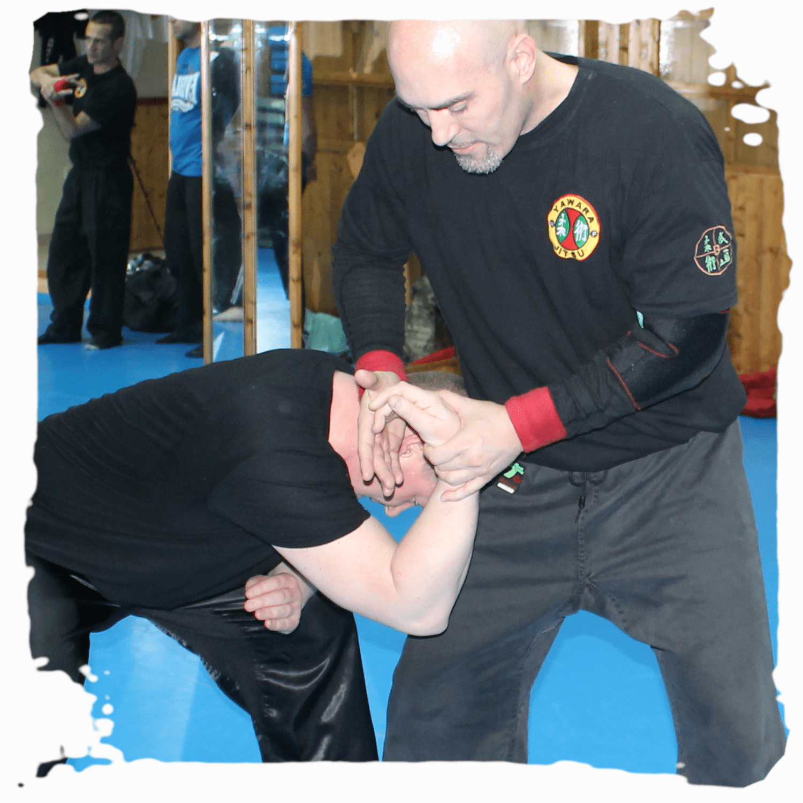
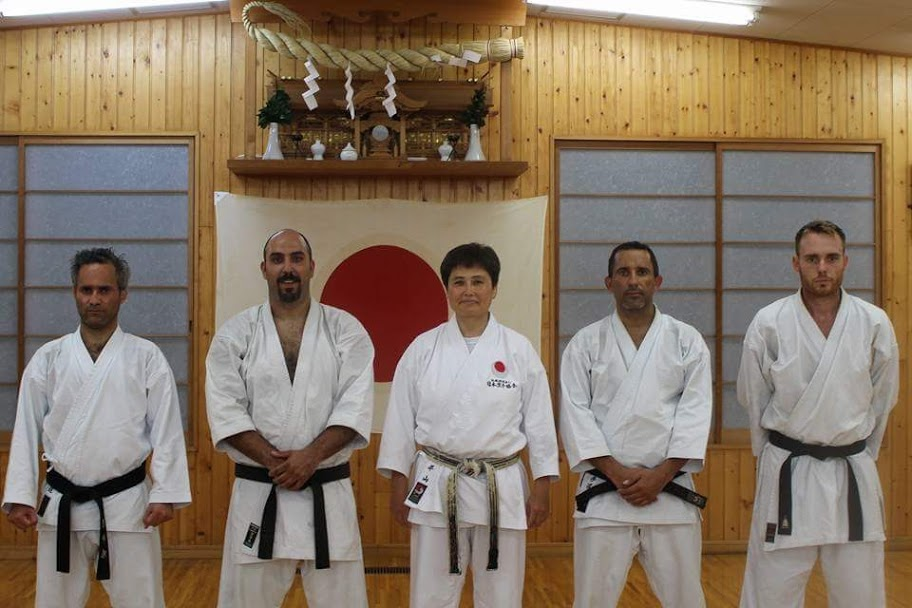

Karate y Kobudo
Milenario arte de combate de Okinawa, complementado con el Kobudo, las armas tradicionales asociadas al karate.
Ver Karate y Kobudo
Karate, Kobudo, Jujutsu, Iaido, Kenjutsu, Defensa Personal Femenina y más. Un dojo de referencia en Sevilla Este, donde la técnica, el respeto y la tradición de combate oriental se transmiten desde hace más de tres décadas.

El Kidokan Dojo se ha convertido en una referencia en las artes marciales en Sevilla. Por una parte, artes marciales tradicionales japonesas como Karate, Kobudo, Jujutsu, Iaido y Kenjutsu. Por otra, otros sistemas como Yawara Jitsu y Silat Suffian Bela Diri, además de Defensa Personal Femenina.
Todo con el respaldo de la Federación Andaluza de Karate y otras asociaciones y organizaciones serias y de prestigio, y con el apoyo del Club Deportivo Kidokan, legalmente constituido e inscrito en el Registro Andaluz de Entidades Deportivas.
Artes marciales tradicionales japonesas y sistemas de defensa personal, impartidas por maestros titulados. Cada una es una vía completa de desarrollo físico, técnico y personal.

Milenario arte de combate de Okinawa, complementado con el Kobudo, las armas tradicionales asociadas al karate.
Ver Karate y Kobudo
Desarrollo físico y psicomotriz de los niños a través del juego, inculcando humildad, respeto y afán de superación.
Ver Karate Infantil
Sistema de combate elaborado por los samuráis, antecesor del aikido y el judo. Vencer con el mínimo de fuerza.
Ver Jujutsu
El arte de desenvainar cortando. Estilo Muso Jikiden Eishin Ryu, con cerca de 450 años de historia.
Ver Iaido
La esgrima japonesa con el sable, una de las artes marciales más antiguas de Japón, junto al Kobujutsu.
Ver Kenjutsu
Autodefensa adaptada a las necesidades de las mujeres de hoy, centrada en la prevención y la actitud.
Ver Defensa Personal
Defensa personal operativa que combina el Yawara Jitsu y el Silat Suffian Bela Diri, fluido y demoledor.
Ver Yawara y Silat
Práctica china milenaria de trabajo interno. Estilo Hun Yuan Tai Quan, para armonizar cuerpo y energía.
Ver Chikung
Las disciplinas tradicionales para adultos mejoran la condición física y mental e imbuyen en las tradiciones de combate.
Conoce el programaUn método de autodefensa probado y perfeccionado durante siglos, que prepara el cuerpo y la mente para evitar o rechazar una agresión.
Las artes marciales tradicionales contribuyen al desarrollo integral de nuestros alumnos, mejorando su condición física y mental e imbuyéndolos en las tradiciones de combate orientales.
Aprendizaje progresivo y estructurado, con una base sólida sobre la que construir buenos artistas marciales.
Humildad, disciplina y respeto. Valores fundamentales que se cultivan en el tatami y trascienden a la vida diaria.
Más de 30 años de historia y la tradición de combate oriental como vía de crecimiento físico, técnico y personal.

No necesitas experiencia previa para empezar. Ven a conocer las instalaciones, prueba una clase de la disciplina que te interese y decide con calma. Te enseñamos el dojo y resolvemos todas tus dudas.
Las clases se organizan por niveles y edades, de modo que cada persona avanza a su ritmo, con el acompañamiento de maestros titulados.
No. La mayoría de quienes empiezan en el Kidokan Dojo nunca habían practicado artes marciales. Cada disciplina tiene grupos por nivel y se progresa de forma gradual y estructurada.
El Karate Infantil está pensado para niños, con un fuerte componente lúdico que trabaja la psicomotricidad y valores como la humildad y el respeto.
Sí. Puedes venir a conocer el dojo y probar una clase de la disciplina que te interese. Llama o escríbenos por WhatsApp al 666 16 47 46 para concertar el día.
Estamos en la Calle Cueva de Menga nº 1, Local 4, 41020 Sevilla Este, en la Urbanización Las Góndolas, a la entrada de Sevilla Este por la Avda. Montes Sierra desde el Centro Comercial Los Arcos. Tienes el mapa en la página de Ubicación.
Sí. El Kidokan Dojo cuenta con el respaldo de la Federación Andaluza de Karate y el Club Deportivo Kidokan está legalmente constituido e inscrito en el Registro Andaluz de Entidades Deportivas.
Estamos en Sevilla Este, en la Urbanización Las Góndolas. Contacta con nosotros por teléfono, WhatsApp o email.